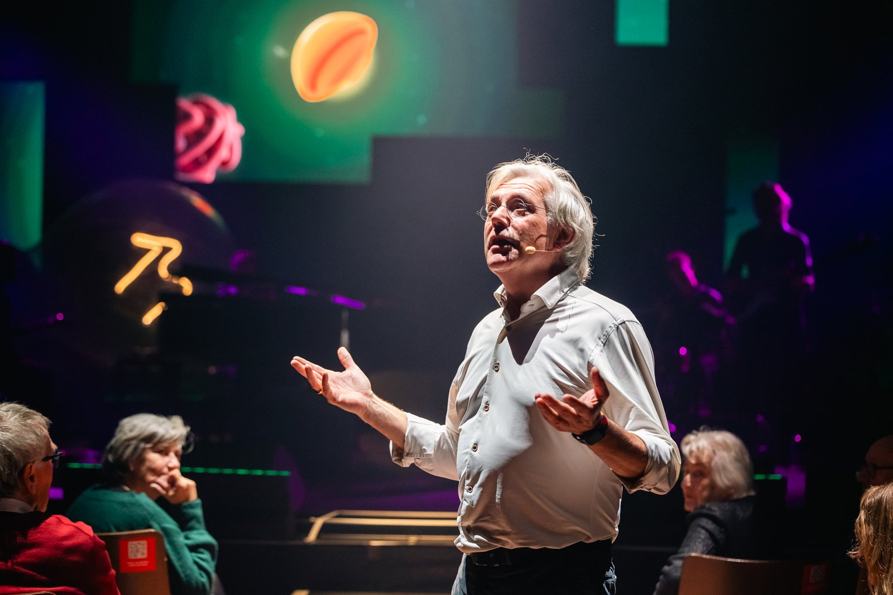

Logo
Een herkenbare U met woordmerk. Gebruik alleen de goedgekeurde varianten uit de partnerkit en geef het logo voldoende ruimte.
Groen op Paper, uitgesproken accenten, grote vragen en echte mensen. De belangrijkste bouwstenen compact bij elkaar.

Een herkenbare U met woordmerk. Gebruik alleen de goedgekeurde varianten uit de partnerkit en geef het logo voldoende ruimte.
Varsity Green is de basis, Paper het warme canvas. Gebruik per vlak één verzadigde accentkleur.
Oldschool Grotesk Condensed roept de vraag, Oldschool Grotesk draagt de tekst en Tiempos italic geeft citaten karakter. De fonts worden door het merkteam toegepast.

Warm, echt en een beetje korrelig. Echte wetenschappers en echte situaties — nooit generieke stock.
Deze fotografie mag zichtbaar zijn en is geschikt als kant-en-klaar beeld bij een artikel over Universiteit van Nederland.